LOFAR Solar Cookbook¶
2019 Summer By Peijin Zhang Directed by Pietro Zucca and Sarrvesh Sridhar
LOFAR can produce high spatial resolution (10asec) interferometry image at 6 Frame per Second. This document shows the reduction process of the solar imaging and dynamic spectrum data.
All the code mentioned in this page can be found in github
Some of the frequently used functions have been packed into a module : LofarSun, a simple demo : demo
Calibration¶
The calibration uses a well known and stable source to convert all the signals received by different antenna to a same reference level.
This can be done by following the steps below:
- Create the source.db file with a sky model of the calibrator
makesourcedb in=/path/to/TauA.skymodel out=TauA.sourcedb
- Run auto-weight with NDPPP (Note: this step should be done for both sun and the calibrator):
NDPPP msin=/path/to/calibrator.MS msout=/path/to/calibrator-autow.MS steps=[] msin.autoweight=True
- Use the observation of the calibrator to predict the parameters for the calculation applied to the solar observation
NDPPP msin=/path2/to/calibrator-autow.ms \ Msout=. \ steps=[gaincal] \ gaincal.usebeammodel=True \ gaincal.solint=4 \ gaincal.sources=TauAGG \ gaincal.sourcedb=TauA.sourcedb \ gaincal.onebeamperpatch=True \ gaincal.caltype=diagonal
- Apply the parameters predicted by step (3)
NDPPP msin=/path2/to/sun-autow.ms \ msout=. \ msin.datacolumn=DATA \ msout.datacolumn=CORR_NO_BEAM \ steps=[applycal] \ applycal.parmdb=/path/to/calibrator-autow.MS/instrument \ applycal.updateweights=True
- Apply the beam of the calculation for the LOFAR station:
NDPPP msin=sun-autow.MS \ msout=. \ msin.datacolumn=CORR_NO_BEAM \ msout.datacolumn=CORRECTED_DATA \ steps =[applybeam] \ applybeam.updateweights=True
The steps (2)-(5) are integrated in the script auto_sun_calib.py to calibrate the MS files in batch.
For the solar interferometry, the calibration is essential. Figure 1 shows the difference between the calibrated and un-calibrated data
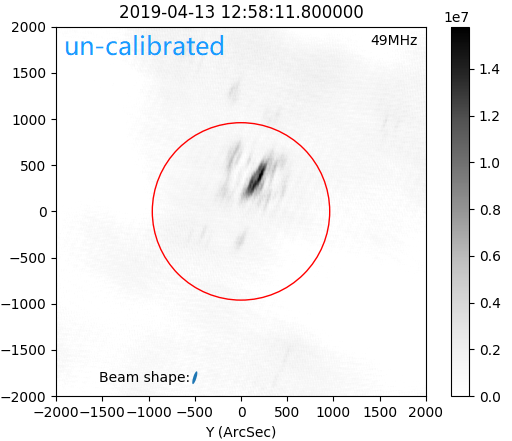 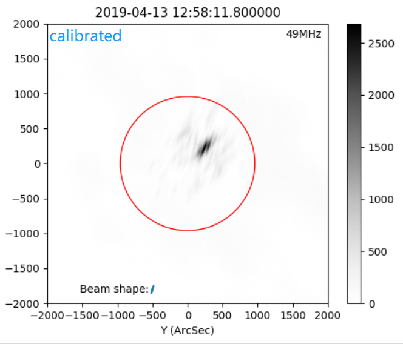
Figure 1. The image result of calibrated and un-calibrated data
Imaging¶
After the calibration, the produced file [sun-autow.MS] is ready for imaging, here we use the software [wsclean] to produce the solar radio image from the visibilities. The full document of wsclean can be found in this link : [https://sourceforge.net/p/wsclean/wiki/Home/]{.underline}
For the solar imaging, we use the following parameters:
wsclean -j 40 -mem 30 -no-reorder -no-update-model-required \ -mgain 0.3 -weight briggs 0 -size 512 512 \ -scale 10asec -pol I -data-column CORRECTED_DATA \ -niter 1000 -intervals-out 1 -interval 10 11 \ -name /path/to/prefix \ /path/to/sun-autow.MS
Larger iterations and more tweaking with these parameters can help make a better image. Details about the parameters are introduced in the imaging brew section.
Image inspection¶
CLEANed image¶
Sometimes we need to interact with the data and see how it looks like immediately after the data reduction. It would be efficiency if we can plot the data from the shell command and see the image from a pop-up window.
For general purpose of the fits inspection, one can use display or kvis command to inspect the image:
display filename.fits
Or:
module load karma kvis filename.fits
This commands will show you the image without the coordinate:
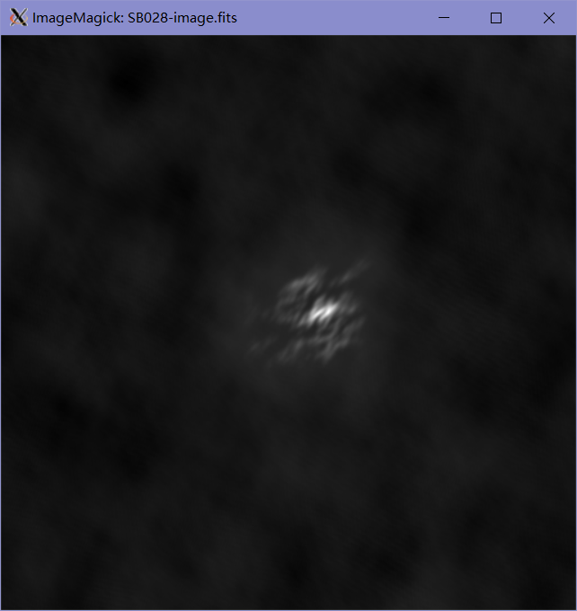
Figure 1. The image shown in [display]
For solar image after wsclean, one can use displayws.py: (deprecated now, see LofarSun for detail)
python displayws.py -h
displayws.py version 0.01 [Python2] by Peijin.Zhang 2019
Inspect the LOFAR solar interferometry data produced by wsclean, with [RA,DEC] transfered to the Heliocentric coordinate.
Parameters:
-t --txt Show the text information of the wsclean fits file
-n --no-plot Do not show plot
-h --help Display this information
-o --out Save the result without display
example:
displayws.py fname.fits -t -n displayws.py fname.fits displayws.py fname.fits -o save.png
This script can give us a plot of the radio in the Heliocentric coordinate, with Arc-Second axis, and the time and frequency channel will be shown in the title and legend in the plot, also the beam shape given from the parameters given by the fits header:
[BMAJ]: The major axis of the beam.
[BMIN]: The min axis of the beam
[BPA]: The position angel of the major
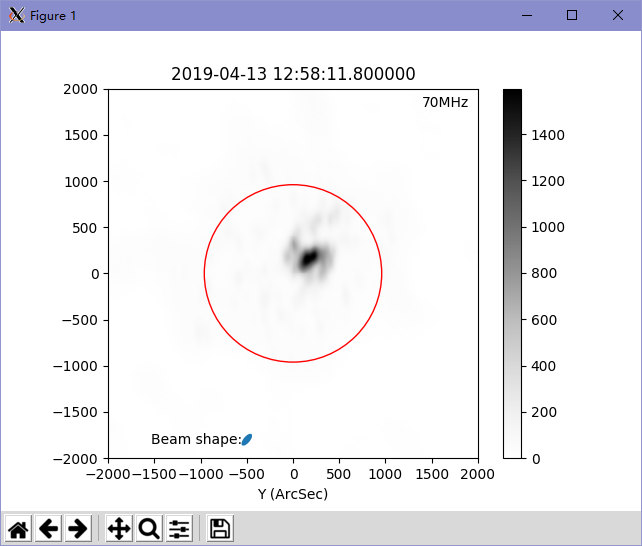
Figure 2. Solar interferometry shown with displayws.py
In displayws.py the beam shape experience the same transform as the sun to the Heliocentric coordinate. And with --t --n arguments, one can see the full content of the fits header.
python displayws.py fits\_test\_par/SB028-image.fits -n -t
output:
[INFO] Do not show the image [INFO] Show the header of the wsfile SIMPLE = T / file does conform to FITS standard BITPIX = -32 / number of bits per data pixel NAXIS = 4 / number of data axes NAXIS1 = 512 / length of data axis 1 ... ... //lots of information text WSCTIMES= 27250. WSCVWSUM= 0.0770765469463797 HISTORY wsclean -j 40 -mem 30 -no-reorder -no-update-model-required -mgain 0.5 - HISTORY weight briggs 0 -size 512 512 -scale 10.5469asec -pol I -data-column COR HISTORY RECTED\_DATA -niter 500 -intervals-out 1 -interval 27250 27255 -fit-beam HISTORY -make-psf -name /data/scratch/zhang/fits\_test\_par/SB028 /data/scratch/zh HISTORY ang/MS/L701913\_SAP000\_SB028\_autow\_uv.MS
I also recommend the Jupyter Notebook for the data interaction, which can show image inline the script.
Inspect the Residual Image¶
For a CLEANed image, one should always check the residual image, if the residual image is flat and the positive and negative values are randomly distributed. One can judge the quality of a CLEANed image by comparing the peak values of the CLEANed image and its residual image:
python displayws.py /path/to/XXX-residual.fits
A good residual of solar image looks like:
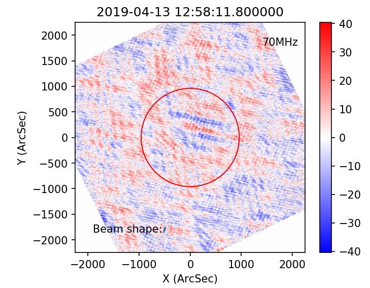
Figure 3. The residual image
Inspect the UV coverage¶
The UV coverage information can be saved by wsclean by append --save-uv parameter to the wsclean command. And one can inspect the UV coverage using the previous script:
python displayws.py /path/to/XXX-uv-real.fits
If there is '--uv' string in the input file name, it will show the UV coverage in wavenumber space. A sample UV coverage looks like:
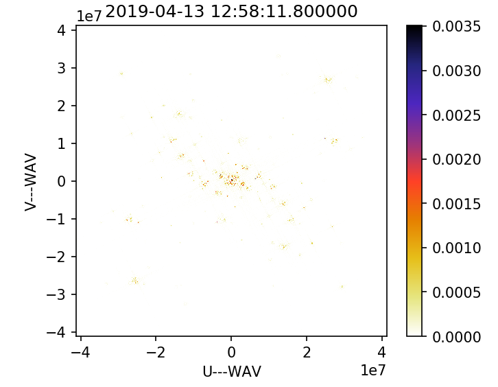 Figure 4. The UV coverage
Module LofarSun¶
For scientific use, the module LofarSun can provide the Brightness temperature (Tb) map of the sun, and it is quite simple:
# import everything we need import numpy as np import matplotlib.pyplot as plt from lofarSun.lofarData import LofarDataBF, LofarDataCleaned # process interferometry data lofar_cleaned = LofarDataCleaned() lofar_cleaned.load_fits('SB058-t0032-image.fits') lofar_cleaned.plot_image()
which gives you:
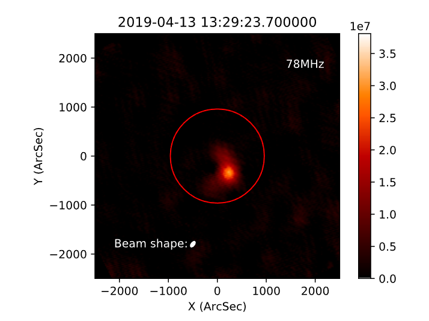
Image Brewing¶
Wsclean is a complex and powerful software, it can produce amazing image when the parameters are set properly, in this section, we introduce a few parameters that may influence the image result.
Scales¶
The --size and --scale argument controls the dimensions of the produced image, -size determines the pixel size (2 parameters: width and height) of the produced image. --scale determines the angular with of a pixel.
The wsclean users should be aware that the image with different size can result in totally different image. The following is an example of solar imaging with different --size
Configuration of image (1)
wsclean -j 40 -mem 80 -no-reorder -no-update-model-required\ -mgain 0.7 -weight briggs 0 -size 1000 1000 \ -scale 3asec -pol I -auto-mask 3 \ -auto-threshold 0.3 -data-column CORRECTED_DATA \ -niter 1000 -intervals-out 1 -interval 27250 27255 \ -fit-beam -make-psf \ -name /path/to/output/name /path/to/input.MS
Configuration of image (2)
wsclean -j 40 -mem 80 -no-reorder -no-update-model-required\ -mgain 0.7 -weight briggs 0 -size 6000 6000 \ -scale 3asec -pol I -auto-mask 3 \ -auto-threshold 0.3 -data-column CORRECTED_DATA \ -niter 1000 -intervals-out 1 -interval 27250 27255 \ -fit-beam -make-psf \ -name /path/to/output/name /path/to/input.MS
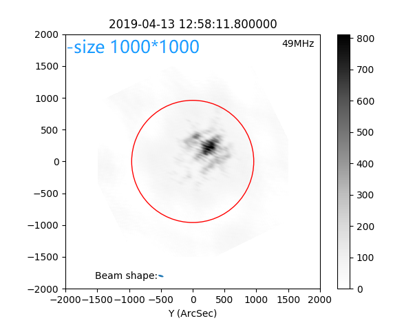 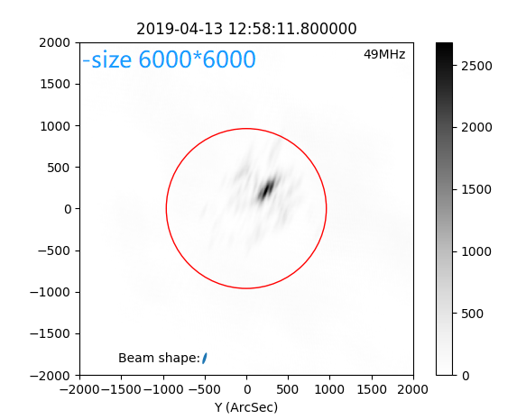
Figure 3. The comparing of imaging result with diffrerent pixel size argument.
From Figure 3 we can clearly see the difference. Both of the two image in Figure 3 have the Field of View (FOV) lager than the sun, which contains a strong source. A too large FOV may introduce the signal from side-lobe
The argument --scale means the resolution, so this number should be "The smaller, the better". While, as mentioned previously, better image demands larger FOV. Thus, we should balance between the resolution and FOV. In this situation, the best choice is using as large FOV as possible with enough resolution. The enough resolution for --scale is usually 0.2*beamsize.
Iteration steps¶
The number of iteration steps determines how many times the PSF fits image, we can either use --niter to manually set the iteration step or use --auto-threshold to let wsclean decide when to stop. The parameter --niter is an "the more the better" parameter.
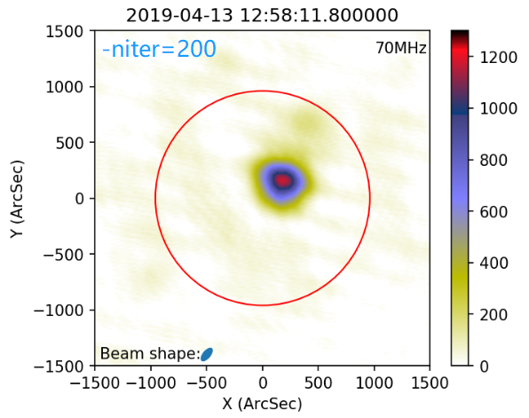 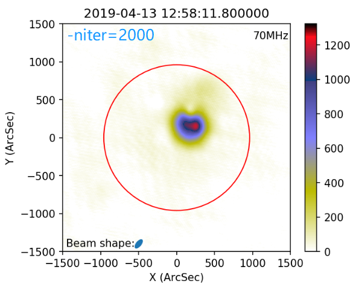
Figure 5. Comparing between large and small number of iteration
Small value for --niter will give you the fuzzy image with a correct peak value (if there is peak in the image). While, more iteration steps will give you the structure of the source.
Multiscale¶
Wsclean assume the sources to be point source for default configuration, this works for most of the astronomy work. The sun itself is a big (960arcsec) extended source, and the active region is also non-point like. Thus, the extended source needs to be considered for the solar imaging. The parameter --multiscale is used to take extended source into consideration.
The following is an example of imaging with and without --multiscale.
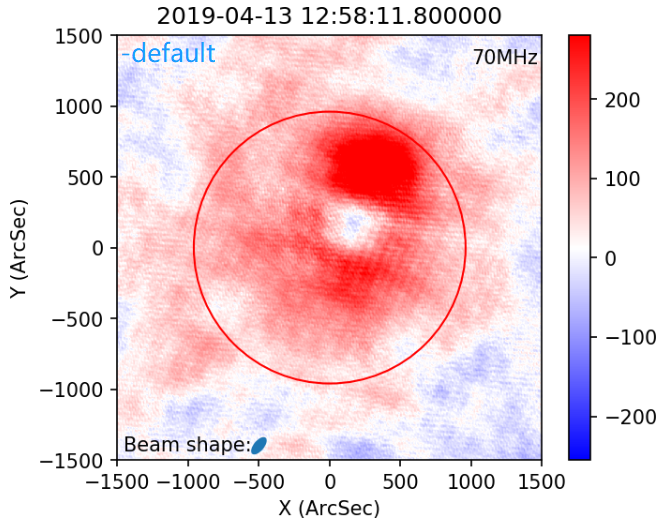

Figure 6. The residual map of the imaging with and without multiscale
Corresponding wsclean command is:
wsclean -j 40 -mem 90 -no-reorder -no-update-model-required \ -mgain 0.8 -weight briggs 0 -size 1024 1024 \ -scale 4asec -pol I -auto-mask 6 -multiscale \ -auto-threshold 2 -data-column CORRECTED_DATA \ -niter 2000 -intervals-out 1 -interval 27250 27255 \ -fit-beam -make-psf -name \ /data/scratch/zhang/fits_test_par/SB048testx \ /data/scratch/zhang/MS/L701913_SAP000_SB048_autow_uv.MS
The residual with default configurations (no multiscal) show large patterns with large intensity, while the residual with multiscale is flat and randomly distributed.
Note that the multiscale parameter is extremely time comsuming, for my case, it takes about 50x times of calculation resource to generate a image.
Abbreviations¶
FOV field of view
FPS frame per second
PSF Point source spread